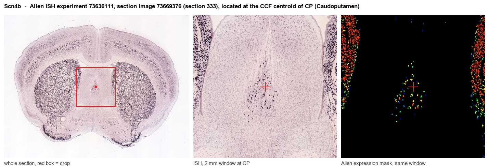
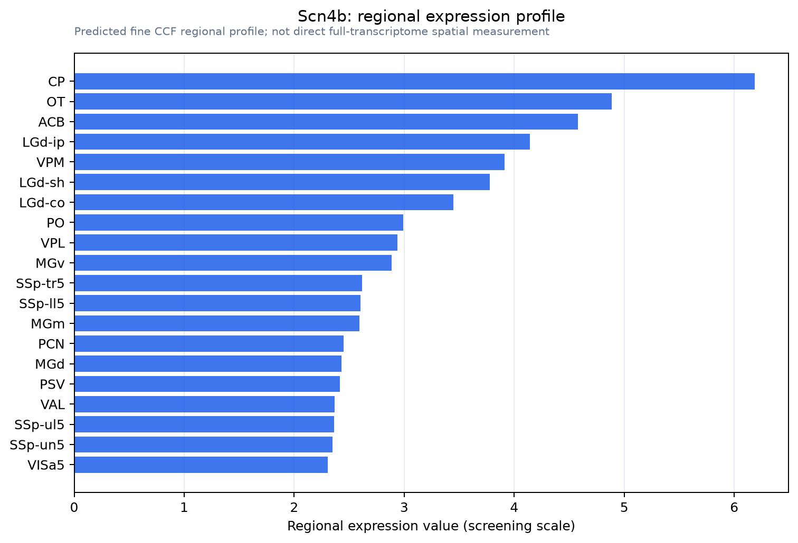

Scn4b
Sodium channel regulatory subunit beta-4
Spatial tier: RESTRICTED · Class: ION_CHANNEL · Top region: CP (Caudoputamen) · Positive regions: 24/554
43.7Discovery Score
42.1Targetability Score
CEvidence grade C
What this means: Scn4b: fine CCF profile is restricted toward CP (top regions: CP, OT, ACB, LGd-ip, VPM; 24 positive regions); direct spatial validation is still required.
Function in CP: evidence, prediction, innovation
- Gene function
- SCN4B encodes the beta-4 auxiliary subunit of voltage-gated sodium channels, a single-pass immunoglobulin-domain protein that is disulphide-linked to the pore-forming alpha subunit. Its cytoplasmic tail acts as an open-channel blocking particle: it occludes the pore during depolarisation and then unbinds on repolarisation, generating resurgent sodium current that supports high-frequency repetitive firing.
- Region function
- The caudoputamen is the dorsal striatum: GABAergic D1 direct-pathway and D2 indirect-pathway spiny projection neurons receive massive cortical glutamate and nigral dopamine and control action selection, habit formation and motor vigour.
- Published in this region
- direct Direct. Miyazaki et al. 2014 showed that beta-4 is more highly expressed in dorsal and ventral striatum than elsewhere in the brain, is concentrated in the unmyelinated striatal projection fascicles, and that Scn4b-deficient mice have reduced resurgent sodium current, lower repetitive firing frequency in spiny projection neurons and increased failure of inhibitory postsynaptic currents during repetitive stimulation. Oyama et al. 2006 first reported beta-4 downregulation in Huntington disease striatum, and Sathitloetsakun et al. 2026 showed that Scn4b knockdown reproduces Huntington-like striatal transcriptional signatures while Scn4b overexpression rescues motor and cognitive deficits in an HD model.
- Predicted function
- Prediction: beta-4 should prove to be the molecular determinant of the striatum's capacity for sustained high-frequency output, so its loss is predicted to convert spiny neurons from reliable burst transmitters into low-pass filters. Striatum-restricted Scn4b deletion in adult mice is predicted to reduce action-potential fidelity in striatal projection fascicles, flatten movement vigour and speed-accuracy scaling in operant tasks, and accelerate motor decline when crossed onto an HD background; AAV-mediated Scn4b overexpression should do the reverse and represents a plausible disease-modifying strategy.
- Innovation
- ★★☆☆☆ 2/5 Beta-4 in striatum is established but the field is small, and its causal role in Huntington phenotypes has only just been demonstrated, leaving substantial room for circuit-level work.
- Tools
- Scn4b knockout mice; AAV-Scn4b overexpression vectors validated in HD models; anti-SCN4B antibodies; sodium-channel pharmacology (tetrodotoxin, riluzole) and the beta-4 C-terminal peptide used to reconstitute resurgent current in vitro; Drd1-Cre and Adora2a-Cre for pathway specificity.
- References
Direct evidence located at the region

Allen ISH experiment 73636111, section image 73669376 (section 333): the section that contains the CCF centroid of Caudoputamen according to the Allen image-to-atlas alignment (reference_to_image), with a 2 mm window around that point. Left: whole section, red box = window. Middle: ISH signal. Right: Allen's expression-mask view of the same window. open this image in the Allen viewer
Look it up yourself: Allen Mouse Brain ISH for Scn4bAllen reference atlas: CP (structure 672)ABC Atlas MERFISH viewer(in the ABC Atlas choose dataset MERFISH-C57BL6J-638850-CCF, colour cells by gene "Scn4b" or by parcellation_substructure "CP")All genes confined to CP + 3-D brain
Direct spatial evidence
MERFISH REGION LOCATOR

Regional expression figure

Predicted WMB × fine-CCF profile; not direct full-transcriptome spatial measurement.
Spatial profile
Evidence and specificity
- Evidence status
- PREDICTED_FINE
- Direct sources
- None; predicted localization only
- Exclusive threshold
- 12 positive regions out of 554
- Spatial specificity
- 0.291
- Top-region fraction
- 0.055
- Filter status
- PASS
Interpretation limits
- Cell-type-to-region projection is imputed expression, not direct spatial measurement.
- Adult reference atlases do not establish stability across age, sex, strain, state, or disease.
- Transcript abundance does not guarantee protein abundance or genetic-tool performance.